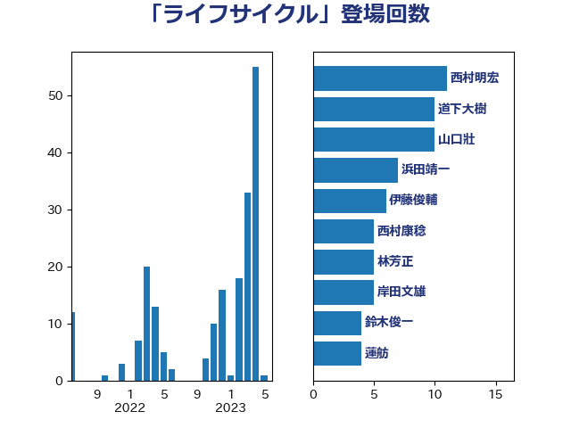

単語「ライフサイクル」

| 西村明宏 | 自由民主党 | 11 回 |
| 道下大樹 | 立憲民主党 | 10 回 |
| 山口壯 | 自由民主党 | 10 回 |
| 浜田靖一 | 自由民主党 | 7 回 |
| 伊藤俊輔 | 立憲民主党 | 6 回 |
| 西村康稔 | 自由民主党 | 5 回 |
| 林芳正 | 自由民主党 | 5 回 |
| 岸田文雄 | 自由民主党 | 5 回 |
| 鈴木俊一 | 自由民主党 | 4 回 |
| 蓮舫 | 立憲民主党 | 4 回 |
| 重徳和彦 | 立憲民主党 | 3 回 |
| 萩生田光一 | 自由民主党 | 3 回 |
| 朝日健太郎 | 自由民主党 | 3 回 |
| 徳永エリ | 立憲民主党 | 3 回 |
| 小林茂樹 | 自由民主党 | 3 回 |
| 齋藤健 | 自由民主党 | 2 回 |
| 鈴木義弘 | 国民民主党 | 2 回 |
| 角田秀穂 | 公明党 | 2 回 |
| 舟山康江 | 国民民主党 | 2 回 |
| 美延映夫 | 日本維新の会 | 2 回 |
| 礒崎哲史 | 国民民主党 | 2 回 |
| 浜口誠 | 国民民主党 | 2 回 |
| 水野素子 | 立憲民主党 | 2 回 |
| 末次精一 | 立憲民主党 | 2 回 |
| 日下正喜 | 公明党 | 2 回 |
| 斉藤鉄夫 | 公明党 | 2 回 |
| 山下芳生 | 日本共産党 | 2 回 |
| 小泉進次郎 | 自由民主党 | 2 回 |
| 宮口治子 | 立憲民主党 | 2 回 |
| 奥野総一郎 | 立憲民主党 | 2 回 |
| 佐藤正久 | 自由民主党 | 2 回 |
| 長友慎治 | 国民民主党 | 1 回 |
| 進藤金日子 | 自由民主党 | 1 回 |
| 近藤昭一 | 立憲民主党 | 1 回 |
| 輿水恵一 | 公明党 | 1 回 |
| 西銘恒三郎 | 自由民主党 | 1 回 |
| 西田実仁 | 公明党 | 1 回 |
| 舩後靖彦 | れいわ新選組 | 1 回 |
| 笹川博義 | 自由民主党 | 1 回 |
| 笠井亮 | 日本共産党 | 1 回 |
| 穂坂泰 | 自由民主党 | 1 回 |
| 石川博崇 | 公明党 | 1 回 |
| 石井拓 | 自由民主党 | 1 回 |
| 田村貴昭 | 日本共産党 | 1 回 |
| 田嶋要 | 立憲民主党 | 1 回 |
| 田中英之 | 自由民主党 | 1 回 |
| 浅野哲 | 国民民主党 | 1 回 |
| 河西宏一 | 公明党 | 1 回 |
| 梶山弘志 | 自由民主党 | 1 回 |
| 平山佐知子 | 無所属 | 1 回 |
| 岩渕友 | 日本共産党 | 1 回 |
| 山田美樹 | 自由民主党 | 1 回 |
| 山崎誠 | 立憲民主党 | 1 回 |
| 宮崎勝 | 公明党 | 1 回 |
| 大塚耕平 | 国民民主党 | 1 回 |
| 塩田博昭 | 公明党 | 1 回 |
| 堤かなめ | 立憲民主党 | 1 回 |
| 城井崇 | 立憲民主党 | 1 回 |
| 中谷真一 | 自由民主党 | 1 回 |
| 上田清司 | 国民民主党 | 1 回 |
| 一谷勇一郎 | 日本維新の会 | 1 回 |